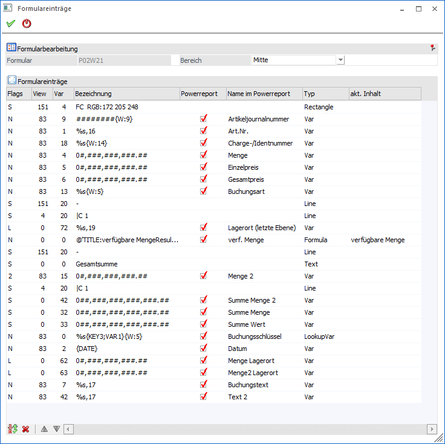
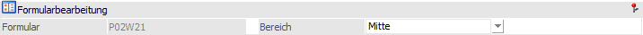
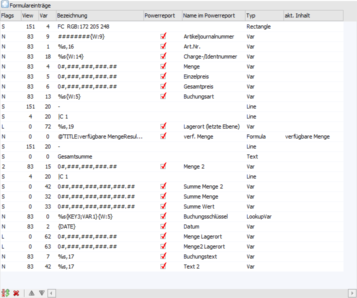

Durch Anwahl des Buttons "Alle Einträge" im Formular Editor öffnet sich das Fenster "Formulareinträge". In diesem werden alle Elemente des Formulars angezeigt.

Formularbearbeitung

Ø Formular
An dieser Stelle wird der Name des Formulars angezeigt.
Ø Bereich
Mit Hilfe einer Auswahlliste kann angegeben werden, ob die Elemente des Kopfs, der Mitte oder des Fußes in der Tabelle "Formulareinträge" angezeigt werden sollen.
Tabelle "Formulareinträge"

In der Tabelle werden alle Elemente des zuvor gewählten Bereichs angezeigt. Neben der Gesamtübersicht besteht hier u.a. die Möglichkeit die Reihenfolge anzupassen und Formeln zu betiteln. Hierfür stehen folgende Spalten zur Verfügung:
Ø Flags
An dieser Stelle wird das Flag des Elements angezeigt.
Ø View / Var
In diesen Spalten werden die View und Var der zu Grund liegenden Variablen angezeigt.
Ø Bezeichnung
Hier wird die Bezeichnung bzw. der Inhalt des Elements angezeigt und kann editiert werden. So ist es unter anderem möglich die Formatierung von Zahlenfeldern zu beeinflussen oder über einen Matchcode-Button in die Bearbeitung einer Formel zu wechseln.
Ø Powerreport
Mit Hilfe dieser Checkbox kann bei Elementen aus dem Bereich "Mitte" definiert werden, ob die Daten im Power Report zur Verfügung stehen sollen oder nicht.
Hinweis
Nur Elemente der Typen "Text Variable", "Numerische Variable", "Datum", "Formel", "Nachschlag Eintrag", "Eigenschaft" und "XML-Element" können an den Power Report übergeben werden.
Achtung
Aktuell wird das Ergebnis einer Formel nur im Power Report angezeigt, wenn die Ausgabe über eine eigene Variable erfolgt. D.h. das Ergebnis muss in eine Variable abgestellt werden und diese muss dann wiederum als "Text Variable", "Numerische Variable" oder "Datum" ausgegeben werden.
Ø Name im Power Report
An dieser Stelle kann der Name für die Anzeige innerhalb des Power Reports angepasst werden. Im Standard wird der Name der Variable übergeben.
Ø Typ
Hier wieder der Typ des Elements angezeigt.
Ø akt. Inhalt
Handelt es sich um eine Formel des Typs "VBScript" oder "JScript", so kann in dieser Spalte eine Betitelung für die Formeln hinterlegt werden (d.h. was macht die Formel). Dieses hat zur Folge, dass im Formular Editor statt des Worts "Formel" der hier eingetragene Text auf dem Bildschirm erscheint.
Hinweis
Der Text wird mit der Syntax "TITLE:xxx" (xxx => Beschriftung / Betitelung) als auskommentiertes Element innerhalb der Formel gespeichert.
Tabellenbuttons
Ø Selektion umkehren
Durch Anklicken des Buttons "Selektion umkehren" wird die PowerReport-Selektion in der Tabelle ins Gegenteil verkehrt.
Ø keine Zeile selektieren
Durch Anklicken dieses Buttons wird die PowerReport-Selektion bei allen Einträgen entfernt.
Ø Zeile hinauf
Mit dem Button "Zeile hinauf" wird das markierte Element nach oben verschoben.
Ø Zeile hinunter
Mit dem Button "Zeile hinunter" wird das markierte Element nach unten verschoben.
Buttons
Ø Ok
Durch Anwahl es Buttons "Ok" bzw. der Taste F5 werden die Änderungen gespeichert und das Fenster geschlossen.
Ø Ende
Bei Anwahl des Buttons "Ende" bzw. der Taste ESC wird das Fenster geschlossen und alle nicht gespeicherten Eingaben verworfen.